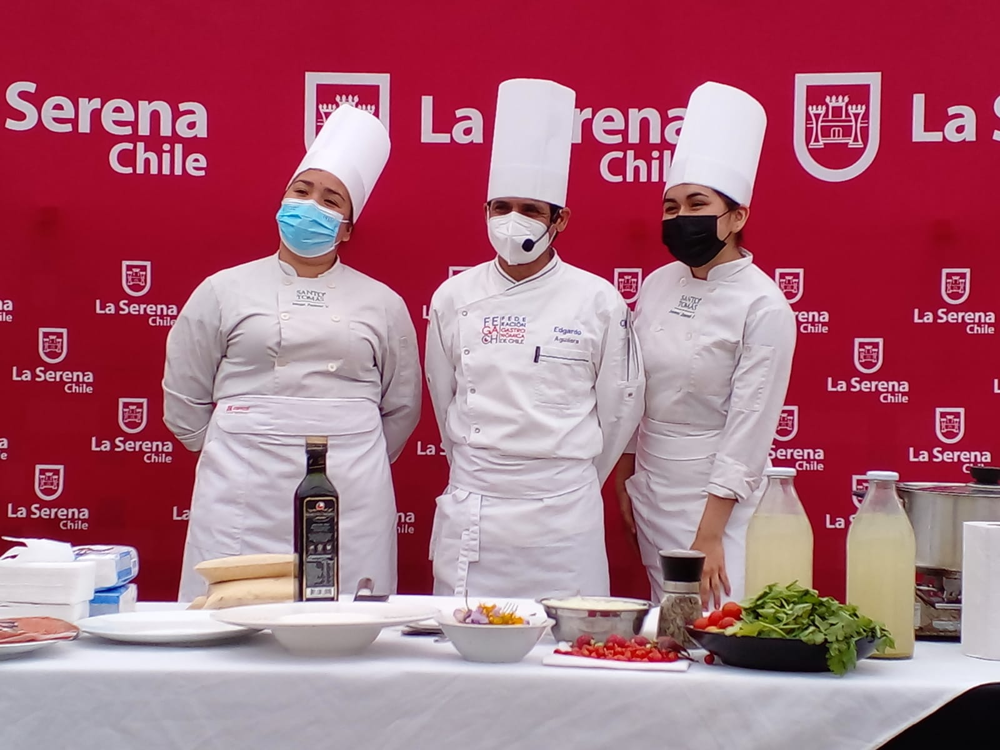
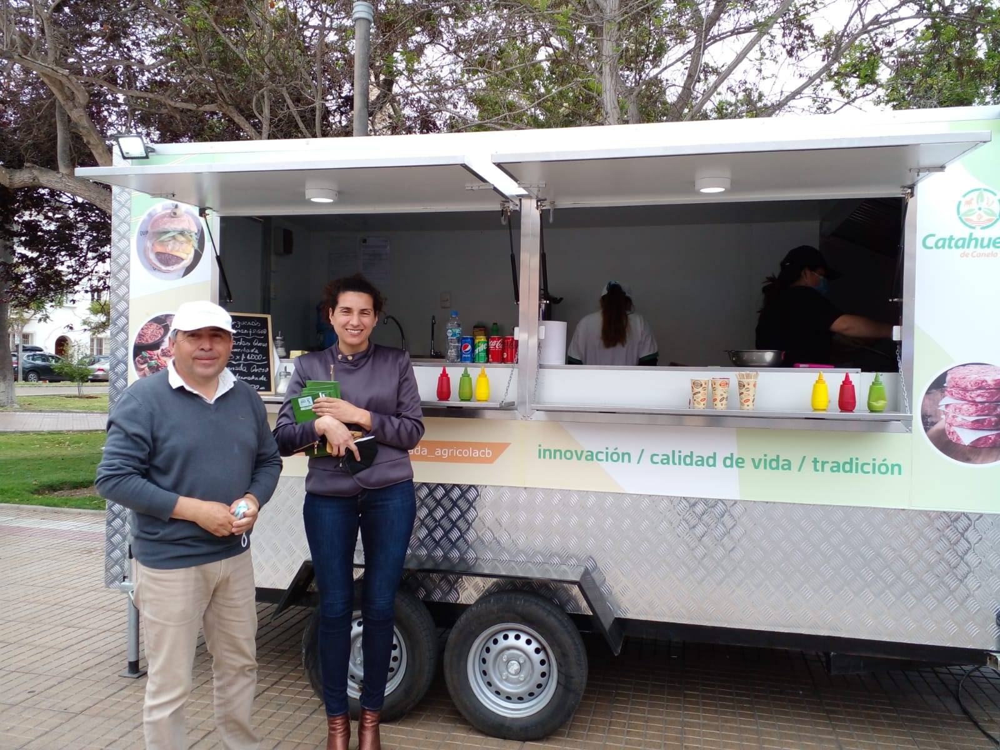
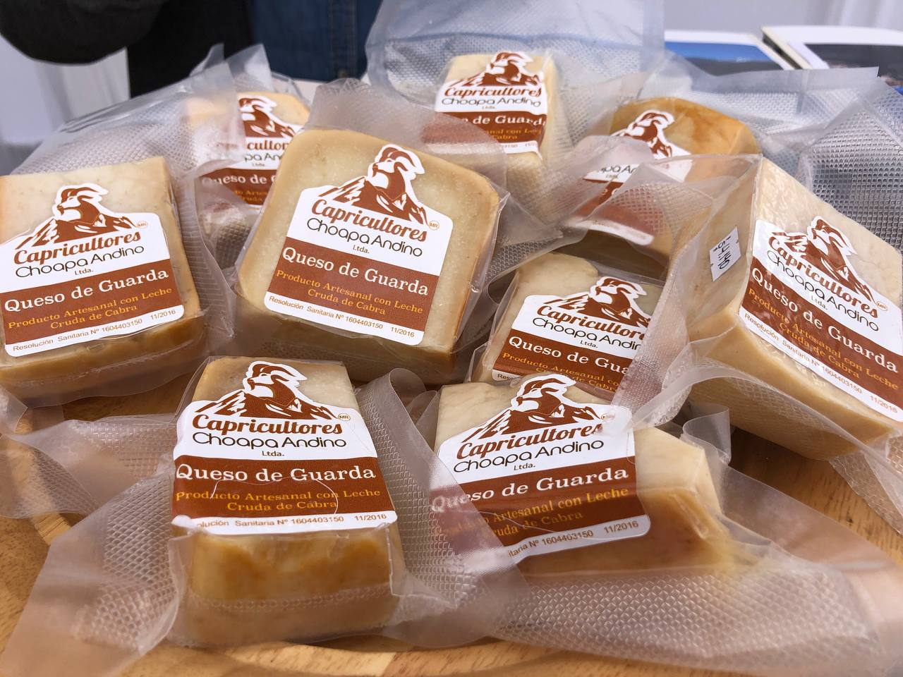
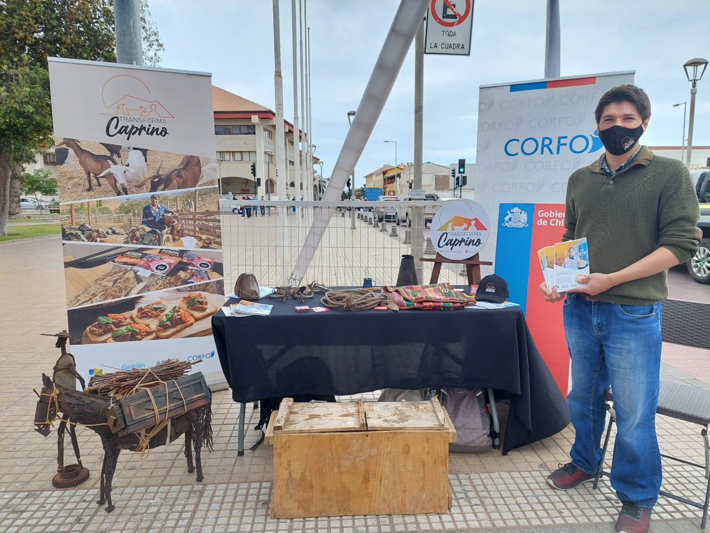
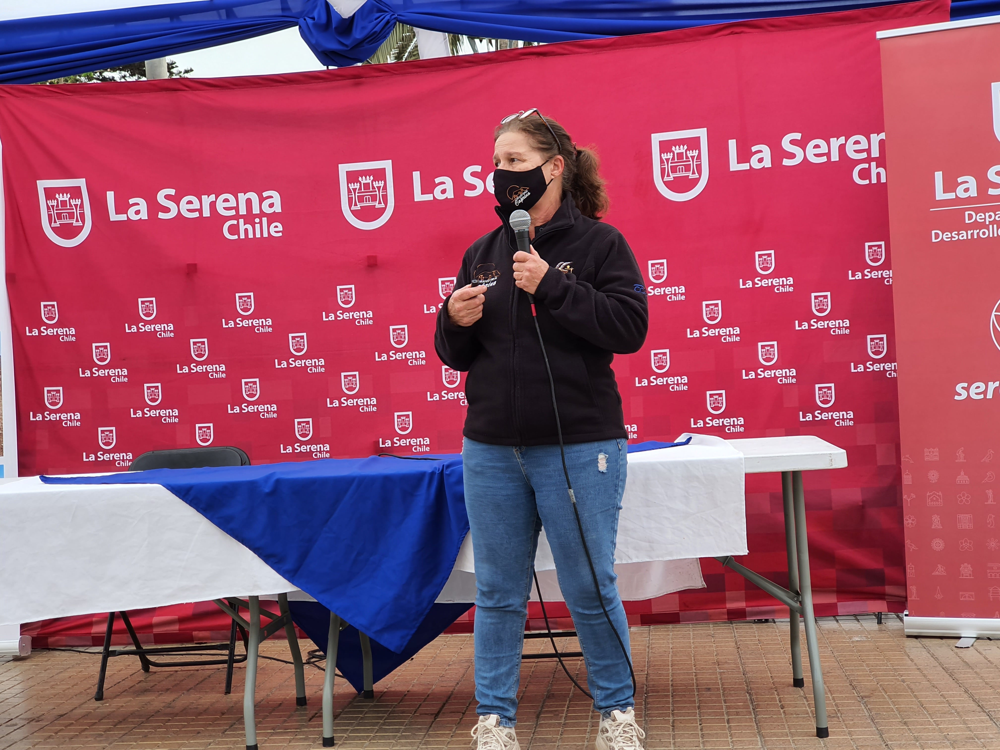

La actividad se realizó el jueves 09 y viernes 10 de diciembre, en la Plaza de Armas.

Con el objetivo de abrir espacios de comercialización y promoción de los productos caprinos, se realizó la Expo Caprina 2021, que tuvo a numerosos productores de lácteos y cárnicos compartiendo sus productos con los visitantes. La iniciativa se realizó en marco del cierre de la capacitación «Elaboración de quesos de cabras de calidad, inocuos y gourmet», impartida por la ingeniero agrónomo, Claudia Torres, y ejecutado por la Municipalidad de La Serena y el Instituto de Desarrollo Agropecuario (INDAP), y que benefició a 12 productores.
En este contexto, el Programa Transforma Caprino fue invitado a participar de la exposición, donde seis de sus socios aportaron a la muestra con jabón de leche de cabra, leche pasteurizada, quesos en múltiples variedades y productos cárnicos. En la oportunidad, destacó la presencia de un foodtruck, perteneciente a la empresa Catahueche, dedicado a la venta de hamburguesas y empanadas de carne mechada y queso de cabra.

Ingrid Haselbauer, gerente del Programa Transforma Caprino, indicó que «fuimos invitados a participar y colaboramos con la charla de la nutricionista Annetti Cubelli, quien contó al público las bondades de los productos caprinos, que van más allá de lo que comúnmente se cree. Además, invitamos al chef Edgardo Aguilera, para una cocina en vivo. Esta oportunidad ha sido una buena demostración de lo que se logra cuando entidades públicas se unen en beneficio de nuestros crianceros y productores».
Macarena Orrego, profesional de apoyo en Fomento Productivo de la Municipalidad de La Serena, expresó que «estas instancias son tremendamente importantes. Somos la capital regional y no siempre los productores tienen las instancias de poder llegar a un público tan masivo y turístico como el que nos hemos encontrado hoy y eso es lo que está detrás de todo este esfuerzo. Por otra parte, la presentación de esta Expo Caprina ha sido de gran nivel, a la altura del mercado gourmet».

Francisca Pinto, vendedora en el Foodtruck Catahueche, explicó que «ha habido mucho movimiento durante ambos días. Se nos agotaron muy temprano las hamburguesas y eso habla del buen recibimiento por parte del público. De la misma manera, las empanadas han tenido muy buena salida, la gente las consume con un tecito para el desayuno o la hora de once. Los comentarios han sido muy positivos respecto a los productos, por lo que el balance es bastante positivo».
Yasna Molina, fundadora de la empresa Caprinos Villaseca, dedicada a la crianza de cabras nativas y a la elaboración de quesos finos, fue parte de la exposición, exhibiendo exitosamente su amplia gama de productos. En este sentido, señaló que «nuestros quesos son de línea gourmet, por ejemplo, el Brie, Camembert, Feta o Tomé, estos últimos especiados con albahaca, merquén, aceitunas verdes, ciboulette o curado en vino».

Finalmente, Gregorio Rodríguez, director de Corfo Coquimbo, indicó que «estas fechas de mucho movimiento turístico hay que aprovecharlas y qué mejor que poder traer a nuestros productores y capricultores con sus productos para que la gente vea y pruebe el alto nivel en el que están hoy en día. La industria caprina ha crecido en gran manera y eso hay que mostrarlo».
Transforma Caprino es un programa que busca impulsar la cadena de valor del rubro caprino, focalizado en diversas comunas de la región, como Canela, Combarbalá, Punitaqui, Monte Patria e Illapel. Corresponde a una iniciativa de Corfo, que cuenta con financiamiento del Gobierno Regional, a través del Programa de Zonas Rezagadas. Para más información, es posible visitar sus redes sociales, donde se encuentra como @caprinochile.
